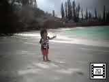
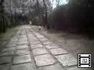
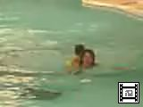
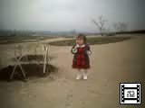
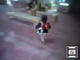

由起子のビデオ(No31-40) |
| 2000年5月2日撮影 (157KB) クト湾をピローグで一周する。とっても心地良くて、由起子は終始 ハイな状態！ |
|
 |
2000年5月1日撮影 (181KB) イル・デ・パン島2日目。ビーチに由起子を立たせて、そのまま ヨチヨチ海に入らせようとしたけど、ものすっごい声で大泣き状態。 |
| 2000年4月23日撮影 (275KB) 飛鳥にある「甘樫の丘」のふもとにドヒャ-とひろがっている 芝生広場。お家からボールを持ってきた由起子は、猫ちゃんの ようにボールと戯れます。 |
|
| 2000年4月8日撮影 (163KB) 鯉が餌をもとめて泳いでいる姿を見て、「ト・トー」「トトー」と 叫び続けている由起子。 |
|
| 2000年4月8日撮影 (235KB) 一度「手を清める」ことを教えると、何度もそれをしたがる。 最後の「ジャー」がなかなか可愛い！ |
|
 |
2000年4月8日撮影 (219KB) 桜が満開の参道。由起子はあっちにトコトコ・こっちにトコトコ、 ちっともじっとしていません。 |
 |
2000年3月6日撮影 (175KB) 波がダメなら、となりの流れるプールで特訓だい！ママは 由起子を背中に乗せて、2周もまわりました。 |
| 2000年3月6日撮影 (213KB) 泣きまくりのオーシャンドーム。。。ザ・ブーンと波が押し寄せて くるたびに、ギャーオォーィとものすごい声で泣いています。 |
|
 |
2000年3月5日撮影 (185KB) 生駒高原でのアイスクリームがとっても気に入ってしまい、 一人でペロペロ美味しさを味わっています。 ここはお花の季節にもう一度訪れたいところです。 |
 |
2000年3月4日撮影 (191KB) えびの高原荘のロビーで、あちこち動きまわる由起子です。 ちっともじっとしていません。必死にイスに登ろうとしています。 |